Project intro
Melbourne Playgrounds is a public resource for families to find playgrounds and activities across Melbourne and Victoria. Despite it being a valuable platform, the site suffered severe usability problems that made basic tasks slow and hard to complete.
This redesign project will involve heuristic evaluation of the original site, moderated and unmoderated usability tests, a UX/UI redesign in Figma, and A/B comparison testing to measure improvements.
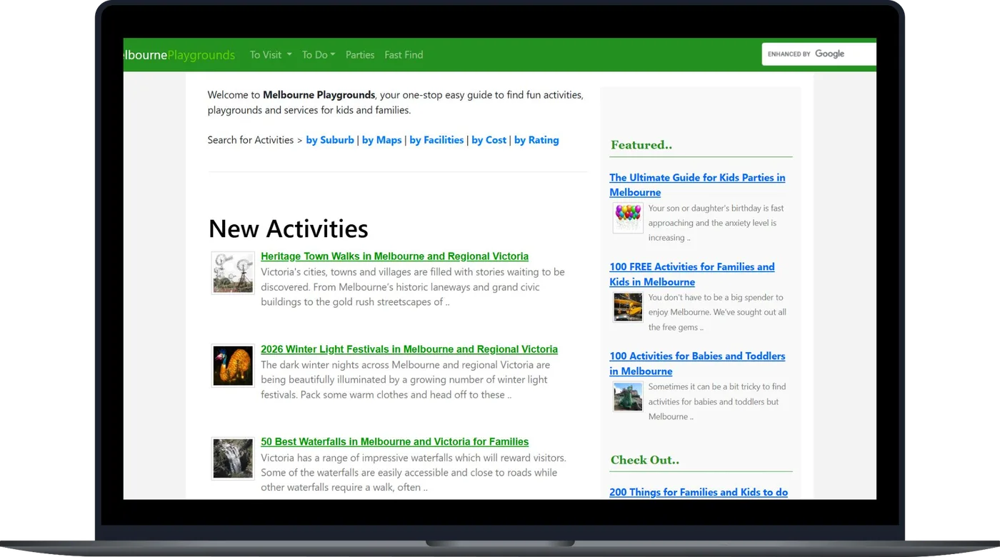
The design process
- 01 Heuristic evaluationApply UX principles to identify issues
- 02 Usability testingDesign and conduct moderated and unmoderated tests
- 03 Analyse & ideateAnalyse data and redesign by issue severity
- 04 RedesignFigma mockups and prototyping
- 05 A/B comparisonRepeat same tests on redesigns, analyse and compare results
01 Identifying the problems
Standards & Conventions
The images on both pages give the impression that they are clickable or interactive, but they are not. In contrast, the search bar appears non-interactive, as it resembles an image, despite being an active input field. This violates user expectations of interaction behaviour.
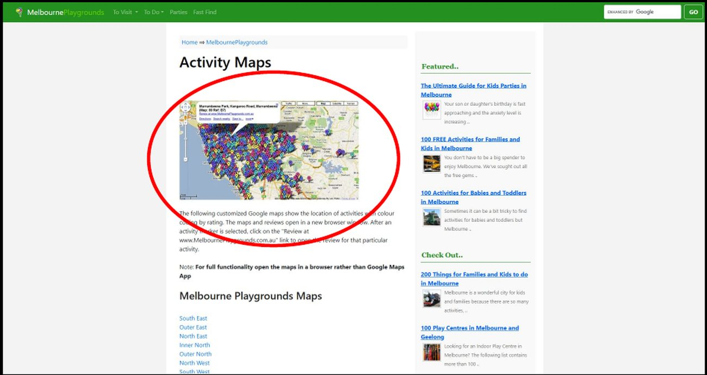
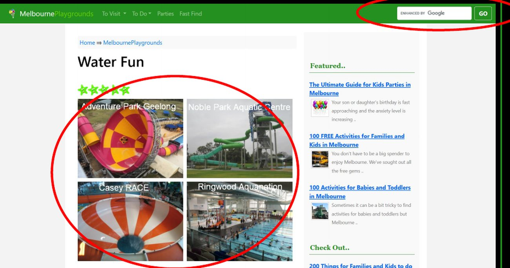
Visual Hierarchy
The articles section dominates the homepage, concealing the website’s primary purpose of finding playgrounds and activities.
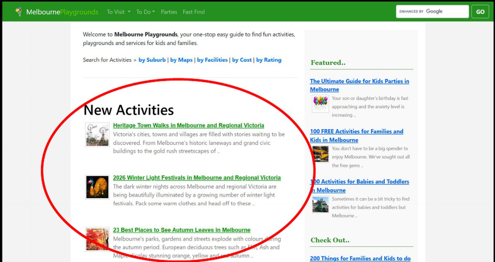
Instructions Must Die
Instructions were displayed throughout the entire website, and was required for many tasks. Features should be intuitive and easy to follow, minimising the need for instructions.
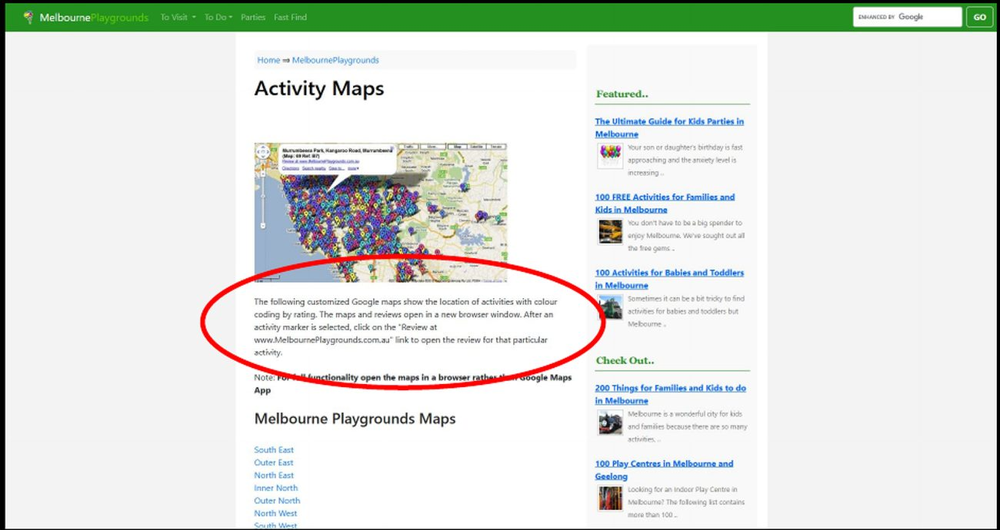
Hick’s Law
Throughout the website, users were required to select regions (e.g. South East, Central, etc.) to access relevant lists or maps. For users who are unfamiliar with which suburbs belong to each region, this process may be confusing and require significant trial and error before finding the desired information.
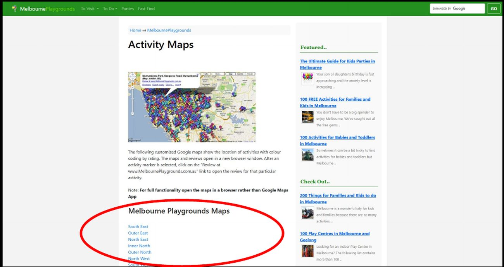
02 The tests
A combination of moderated and unmoderated usability tests with both qualitative and quantitative measures was used to validate known usability issues and gain deeper insights into user behaviours, challenges, and opportunities for improvement.
Think Aloud
3 participantsParticipants spoke of their thought process aloud whilst completing 3 tasks on the site. Each task was timed. This revealed where they hesitated, what confused them, and how they recovered from errors.
SEQ Test
3 participantsAfter each think aloud task, users rated its difficulty on a 7-point rating scale: 1 is very difficult, 7 is very easy. This captures perceived difficulty immediately after each task.
Initial Impressions
3 participantsUsers were shown the “Water Fun” page and asked what they expected certain elements to do and where to find particular information. This tested standards and conventions and visual hierarchy.
SUS Score
3 participantsAn industry standard usability scale completed after all tasks. The higher the score, the better the usability. Captures the users’ overall perception of usability and acts as a benchmark.
First Click Test
10 participantsUsers saw the homepage and were asked where they would click to find a playground near them. Time and accuracy were recorded. First click showcases task success and efficiency. This tests visual hierarchy.
5 Second Test
10 participantsThe homepage was shown for 5 seconds. Users then had to answer what the site was about, what stood out to them, and where the search bar was. This tested whether the page communicates its purpose and features quickly enough.
03 What was revealed
9/10 couldn’t identify the search bar
Only one participant confidently knew where the search bar was. It’s unconventional styling meant users didn’t recognise it as an interactive input.
4/10 couldn’t identify the site’s purpose
These participants gave incorrect answers. This indicated that there was an issue with visual hierarchy.
The map task forced trial and error from everyone
The task involving the map feature scored longest time on task and worst SEQ score: 2/7. One participant didn’t complete it.
All 3 users expected image cards to be interactive
Participants believed that the image cards should have been interactive and contain more information when clicked on.
Fast Find was hard to discover without prompting
Participants struggled to find the Fast Find feature, despite it being the most functional search feature. It lacked visual prominence.
28.3 average SUS Score
The industry average score is a 68. This affirms that the usability of this website is very poor.
The original results
| Test | Task | Result |
|---|---|---|
| SUS score | Overall | 28.3 |
| Think aloud | Task 1: Find a highly rated playground | 3:46, SEQ 3.33/7 (somewhat difficult) |
| Think aloud | Task 2: Find Debney’s Park Playground via map | 5:05, SEQ 2/7 (difficult) |
| Think aloud | Task 3: Find a park within 5km of Box Hill | 2:53, SEQ 3/7 (somewhat difficult) |
| First click | You want to find a playground near you. Where would you click first? | Correct: 8/10, slowest time: 86.3s, average: 23.7s |
| 5 second | What is this site about? | 4/10 couldn’t identify correctly |
| 5 second | Was there a search bar? Where? | 9/10 couldn’t identify correctly |
03 Redesign idea
To start the redesign, I identified key usability issues and opportunities for potential solutions. One of the first areas focused on was the navigation, where it was reorganised by related categories to create a clearer and more intuitive structure.
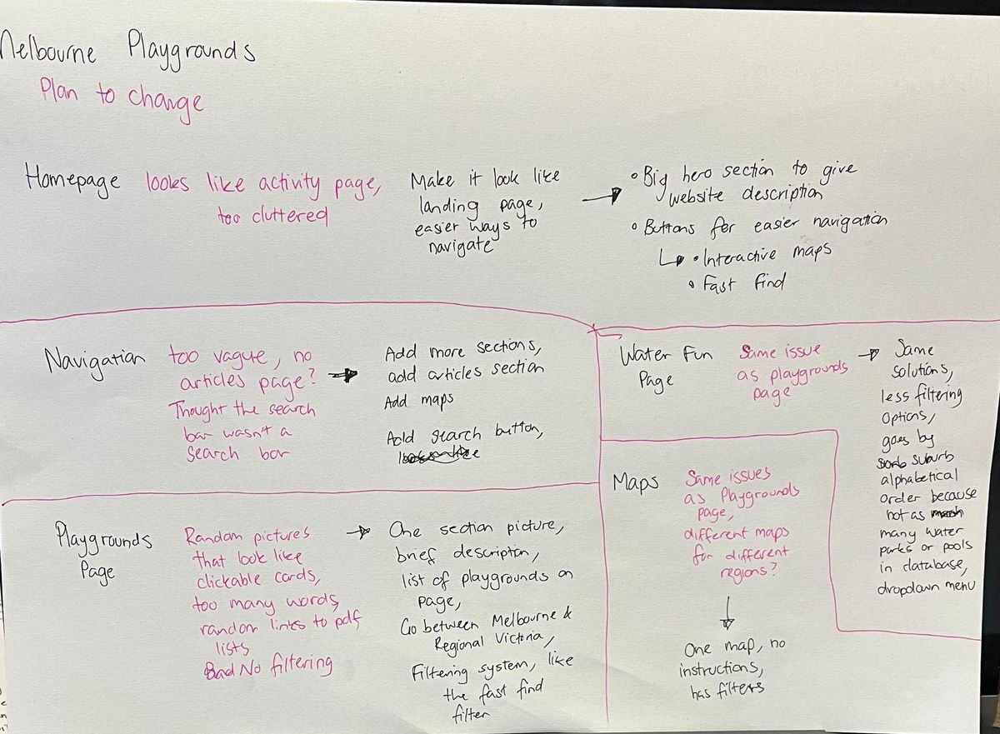
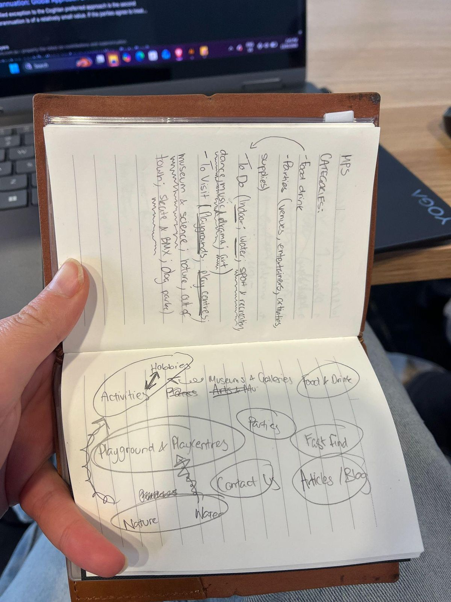
04 The redesign
The homepage
The navigation bar
The Water Fun page
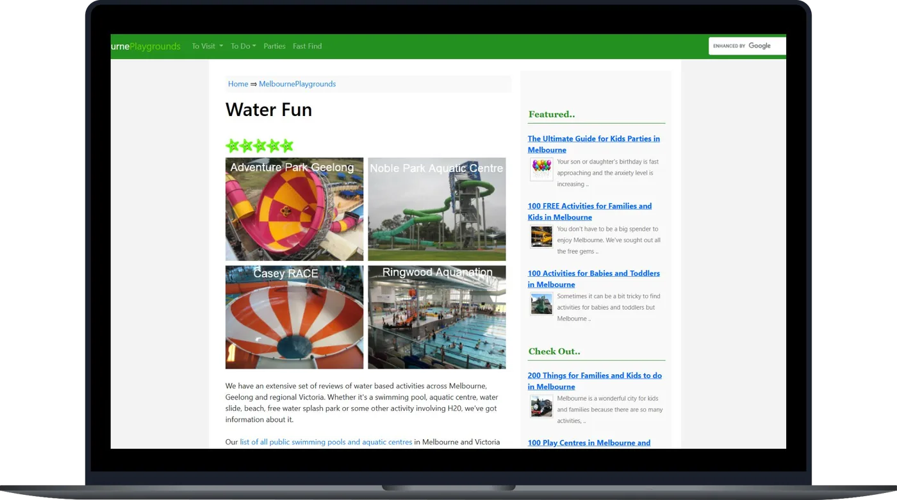
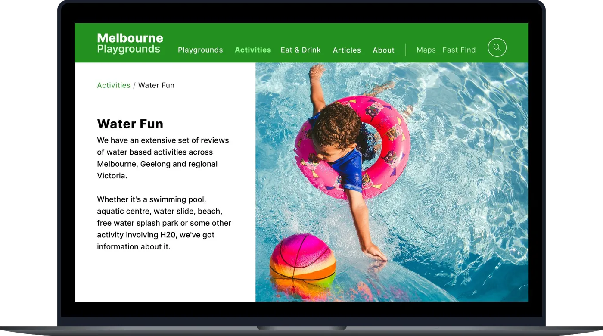
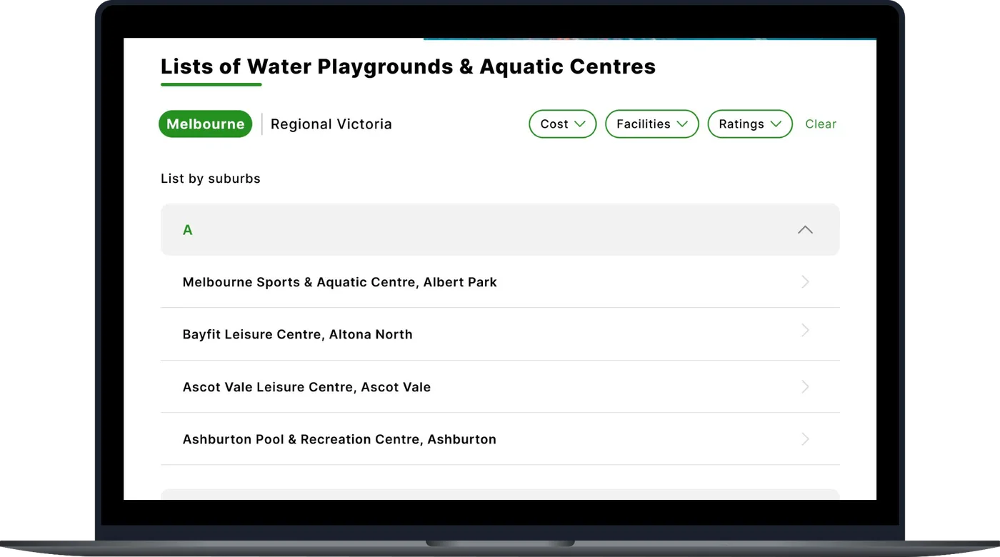
The Playgrounds page
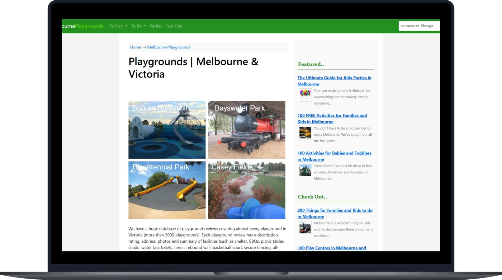
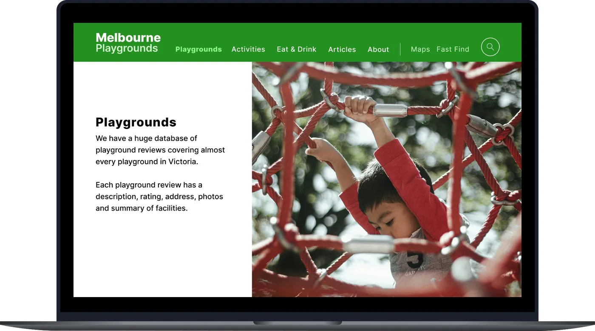
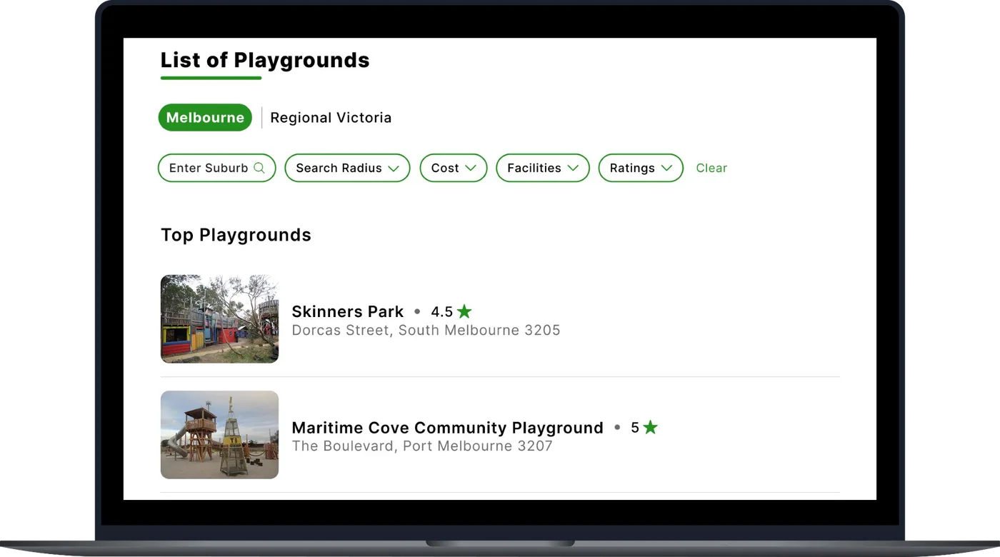
The Maps page
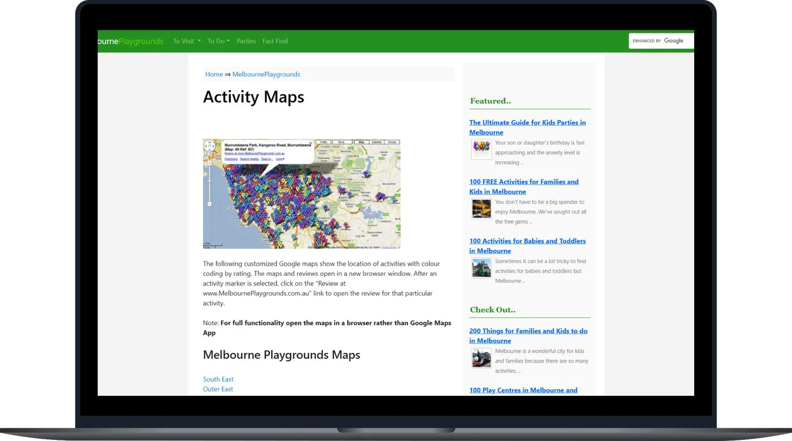
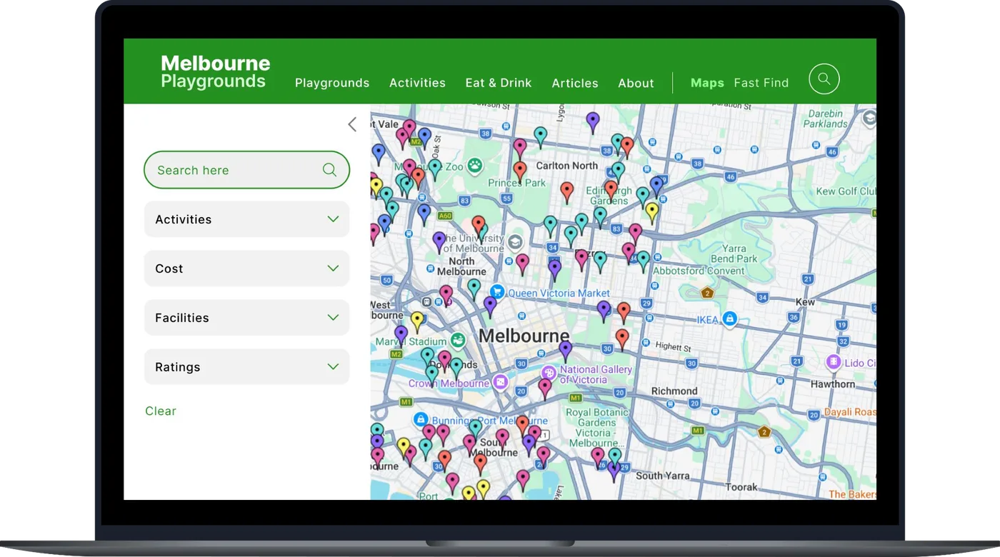
05 A/B comparison
The same tests used for the original site were repeated on the redesign via Figma. This allowed a direct measurement of improvements across all tasks and metrics.
Think aloud
| Task | Original | Redesign | Improvement |
|---|---|---|---|
| Task 1: Find a highly rated playground | 3:46, SEQ 3.33/7 | 0:22, SEQ 6.33/7 | 10.1x faster, +90% ease |
| Task 2: Find Debney’s Park Playground via map | 5:05, SEQ 2/7 | 0:20, SEQ 5.67/7 | 15.5x faster, +183% ease |
| Task 3: Find a park within 5km of Box Hill | 2:53, SEQ 3/7 | 0:43, SEQ 5.33/7 | 4.1x faster, +78% ease |
SUS, first click and 5 second tests
| Measure | Original | Redesign | Improvement |
|---|---|---|---|
| SUS score | 28.3 | 85.8 | +203% |
| First click: average time | 23.7s | 9.3s | 2.55x |
| First click: fastest | 7.3s | 2.4s | 3.04x |
| First click: correct | 8/10 | 10/10 | +25% |
| 5 second: What is this website about? | 6/10 | 10/10 | +67% |
| 5 second: Is there a search bar? Where? | 1/10 | 6/10 | +500% |
What worked
Task completion was drastically faster and more accurate across all 3 tasks. The accuracy of the first click test went from 8/10 to 10/10. SUS scores improved from 28.3 to 85.8. This highlights that the redesign successfully addressed the UX issues identified in the original site.
Key finding
Results were not ordered by rating. Not all pages were redesigned or added into the prototype making some tasks take longer.
Future design response
Results should be ordered by rating. Test with higher-fidelity prototype.
Reflections
A/B testing and comparison confirmed that the redesign massively improved usability across all tasks and metrics. The SUS Score increased by 203%, and task completion times were drastically faster.
01
Testing on a Figma prototype rather than a website could have impacted accuracy of results. Some tasks were faster because fewer pages existed, others may have taken longer because certain pages or interactions weren’t built. Future testing could use more pages and higher fidelity prototypes.
02
The Water Fun page used collapsible alphabetical lists while the Playgrounds page used direct filtering. This is a design inconsistency between similar pages. A more united list pattern should be applied across all page categories.
03
The redesign increased visual prominence for the four distinct search methods (maps, Fast Find, search bar, and page level filters), each one serves a different purpose. This wasn’t always clear to users. There could be clearer visual differentiation through icons or labelling, or a common search method should be prioritised.